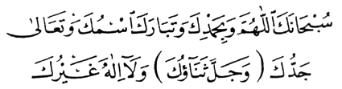
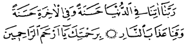
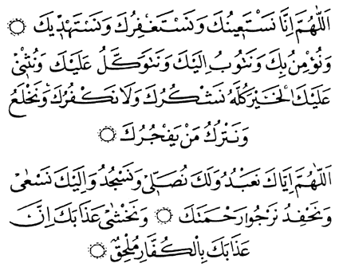
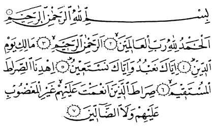
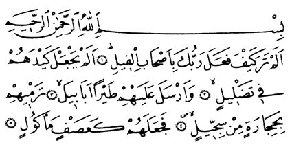
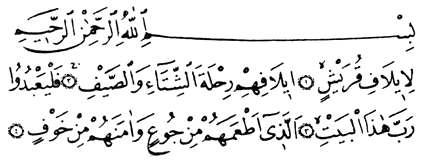
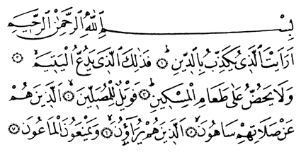
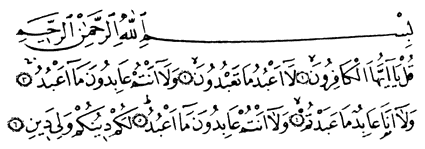
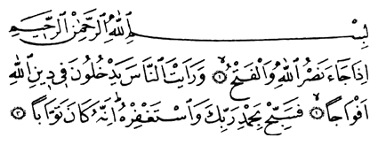
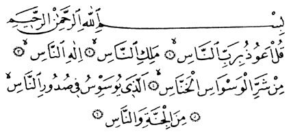

Önemli
Açýklama:
Kur'an okumasýný bilmeyenlere ezberlemede kolaylýk olsun diye sûre ve dualarýn
okunuþlarý Türk harfleri ile de yazýlmýþtýr.
Ancak, Kur'an alfabesindeki bazý harflerin Türk alfabesinde karþýlýklarý olmadýðýndan
sûre ve dualarýn yeni harflerle doðru olarak öðrenilmesi mümkün deðildir.
Bu sebeple sûre ve dualarý, iyi bilen bir öðreticinin aðzýndan dinleyerek
yanlýþsýz öðrenmek gerekir.
Namazýn farzlarýndan biri de Kur'an okumaktýr. Manasý bozulacak þekilde Kur'an'ýn
yanlýþ okunmasý halinde namazýn bozulacaðý düþünülürse, namaz surelerini doðru
ezberlemenin önemi daha iyi anlaþýlýr.
Sübhâneke:
Namazlarda ayakta iken okunur.
Okunduðu yerler:
1) Her namazýn ilk rek'atinde iftitah tekbirinden sonra,
2) Ýkindi namazýnýn sünnetinde üçüncü rek'ate kalkýnca fatihadan önce,
3) Yatsý namazýnýn ilk sünnetinde üçüncü rek'ate kalkýnca fatihadan önce,
4) Teravih namazý dört rek'atte bir selâm verilerek kýlýnýyorsa üçüncü rek'ate
kalkýldýðý zaman fatihadan önce.
5) Cenaze namazýnda birinci tekbirden sonra.

Okunuþu: Sübhânekellâhümme
ve bi hamdik ve tebârakesmük ve teâlâ ceddük (ve celle senâük) ve lâ ilâhe
ðayrük.
Anlamý: Allahým! Sen eksik sýfatlardan pak ve uzaksýn. Seni daima böyle
tenzih eder ve överim. Senin adýn mübarektir. Varlýðýn her þeyden üstündür.
Senden baþka tanrý yoktur.
NOT: Parantez içindeki "Ve celle senâük" cümlesi
cenaze namazýnda okunur.
Ettehiyyâtü:
Okunduðu Yerler:
Namazlarýn her oturuþunda okunur.
Okunuþu: Ettehiyyâtü
lillâhi vessalevâtü vettayyibât. Esselâmü aleyke eyyühen-Nebiyyü ve rahmetüllahi
ve berakâtüh. Esselâmü aleynâ ve alâ ibâdillâhis-Sâlihîn. Eþhedü en lâ ilâhe
illellâh ve eþhedü enne Muhammeden abdühû ve Rasülüh.
Anlamý: Dil ile, beden ve mal ile yapýlan bütün ibadetler Allah'a dýr.
Ey Peygamber! Allah'ýn selâmý, rahmet ve bereketleri senin üzerine olsun.
Selâm bizim üzerimize ve Allah'ýn bütün iyi kullarý üzerine olsun. Þahitlik
ederim ki, Allah'tan baþka tanrý yoktur. Yine þahitlik ederim ki, Muhammed,
O'nun kulu ve Peygamberidir.
Allâhümme
Salli ve Allâhümme Barik:
Okunduklarý Yerler:
1) Bütün namazlarýn son oturuþlarýnda Ettehiyyatü'den sonra,
2) Ýkindi namazýnýn sünneti ile Yatsýnýn ilk sünnetinin birinci oturuþunda
Ettehiyyatü'den sonra,
3) Dört rekatta bir selâm verilerek kýlýnan Teravih namazýnýn ikinci rek'atýnýn
sonundaki oturuþta "Ettehiyyatü"den sonra,
4) Cenaze namazýnda ikinci tekbirden sonra.
Okunuþu: Allâhümme
salli alâ Muhammedin ve alâ âli Muhammed. Kemâ salleyte alâ Ýbrahime ve alâ
âli Ýbrahim. Ýnneke hamidün mecîd.
Anlamý: Allahým! Muhammed'e ve Muhammed'in ümmetine rahmet eyle; þerefini
yücelt. Ýbrahim'e ve Ýbrahim'in ümmetine rahmet ettiðin gibi. Þüphesiz övülmeye
lâyýk yalnýz sensin, þan ve þeref sahibi de sensin.
Okunuþu: Allâhümme
barik alâ Muhammedin ve alâ âli Muhammed. Kemâ bârakte alâ Ýbrahîme ve alâ
âli Ýbrahîm. Ýnneke hamidün mecîd.
Anlamý: Allahým! Muhammed'e ve Muhammed'in ümmetine hayýr ve bereket
ver. Ýbrahim'e ve Ýbrahim'in ümmetine verdiðin gibi. Þüphesiz övülmeye lâyýk
yalnýz sensin, þan ve þeref sahibi de sensin.
Rabbenâ âtina
ve Rabbenâðfirli:
Okunduklarý Yerler:
1) Namazlardaki oturuþlarda Allahümme salli ve Allahümme barikten sonra,
2) Kunut duasýný bilmeyen vitir namazýnda onun yerine "Rabbenâ âtina"
ayetini okuyabilir.
3) Cenaze namazýnda üçüncü tekbirden sonra okunacak dualarý bilmeyen bunlarýn
yerine yine "Rabbenâ âtina" ayetini dua niyetiyle okuyabilir.

Okunuþu: Rabbenâ
âtinâ fid'dünyâ haseneten ve fil'âhirati haseneten ve kýnâ azâbennâr. Birahmetike
yâ Erhamerrahimîn.
Anlamý: Allahým! Bize dünyada iyilik ve güzellik, ahirette de iyilik,
güzellik ver. Bizi ateþ azabýndan koru.
Okunuþu: Rabbenâðfirlî
ve li-vâlideyye ve lil-Mü'minine yevme yekûmü'l-hisâb.
Anlamý: Ey bizim Rabbimiz! Beni, anamý ve babamý ve bütün mü'minleri
hesap gününde (herkesin sorguya çekileceði günde) baðýþla.
Kunut Dualarý:
Vitir namazýnýn üçüncü rek'atinde fatiha ve sûre okunduktan sonra eller yukarý
kaldýrýlýp tekbir alýnýr ve eller tekrar baðlanýnca kunut dualarý okunur.

Okunuþu: Allâhümme
innâ nesteînüke ve nestaðfirüke ve nestehdik. Ve nü'minü bike ve netûbü ileyk.
Ve netevekkelü aleyke ve nüsni aleykel-hayra küllehü neþkürüke ve lâ nekfürüke
ve nahleu ve netrükü men yefcürük.
Allâhümme iyyâke na'büdü ve leke nüsalli ve nescüdü ve ileyke nes'a ve
nahfidü nercû rahmeteke ve nahþâ azâbeke inne azâbeke bilküffâri mülhýk.
Anlamý: Allahým! Senden yardým isteriz, günahlarýmýzý baðýþlamaný isteriz,
razý olduðun þeylere hidayet etmeni isteriz. Sana inanýrýz, sana tevbe ederiz.
Sana güveniriz. Bize verdiðin bütün nimetleri bilerek seni hayýr ile öðeriz.
Sana þükrederiz. Hiçbir nimetini inkâr etmez ve onlarý baþkasýndan bilmeyiz.
Nimetlerini inkâr eden ve sana karþý geleni býrakýrýz.
Allahým! Biz yalnýz sana kulluk ederiz. Namazý yalnýz senin için kýlarýz,
ancak sana secde ederiz. Yalnýz sana koþar ve sana yaklaþtýracak þeyleri kazanmaya
çalýþýrýz. Ýbadetlerini sevinçle yaparýz. Rahmetinin devamýný ve çoðalmasýný
dileriz. Azabýndan korkarýz, þüphesiz senin azabýn kâfirlere ve inançsýzlara
ulaþýr.
NAMAZLARDA OKUNAN BAZI SÛRELER
Önemli
Açýklama:
Kur'an okumasýný bilmeyenlere ezberlemede kolaylýk olsun diye sûre ve dualarýn
okunuþlarý Türk harfleri ile de yazýlmýþtýr.
Ancak, Kur'an alfabesindeki bazý harflerin Türk alfabesinde karþýlýklarý olmadýðýndan
sûre ve dualarýn yeni harflerle doðru olarak öðrenilmesi mümkün deðildir.
Bu sebeple sûre ve dualarý, iyi bilen bir öðreticinin aðzýndan dinleyerek
yanlýþsýz öðrenmek gerekir.
Namazýn farzlarýndan biri de Kur'an okumaktýr. Manasý bozulacak þekilde Kur'an'ýn
yanlýþ okunmasý halinde namazýn bozulacaðý düþünülürse, namaz surelerini doðru
ezberlemenin önemi daha iyi anlaþýlýr.
Fatiha Sûresi:
Namazda ayakta iken okunur.

Okunuþu: Elhamdü
lillâhi rabbil'alemin. Errahmânir'rahim. Mâliki yevmiddin. Ýyyâke na'budü
ve iyyâke neste'în, Ýhdinessýrâtel müstakîm. Sýrâtallezîne en'amte aleyhim
ðayrilmaðdûbi aleyhim ve leddâllîn.
Anlamý: Hamd, âlemlerin Rabbi, merhametli olan, merhamet eden ve Din
Günü'nün sahibi olan Allah'a mahsustur.
(Allahým!) Ancak sana kulluk eder ve yalnýz senden yardým dileriz. Bizi doðru
yola, nimete erdirdiðin kimselerin, gazaba uðramayanlarýn, sapmayanlarýn yoluna
eriþtir.
Fil Sûresi:
Bu ve bundan sonra gelen sûreler, namazlarda ayakta iken ve fatihadan sonra
okunur.

Okunuþu: Elem
tera keyfe fe'ale rabbüke biashâbilfîl. Elem yec'al keydehüm fî tadlîl. Ve
ersele aleyhim tayran ebâbîl. Termîhim bihicâratin min siccîl. Fece'alehüm
ke'asfin me'kûl.
Anlamý: (Ey Muhammed! Kâbe'yi yýkmaya gelen) Fil sahiplerine Rabbinin
ne ettiðini görmedin mi? Onlarýn düzenlerini boþa çýkarmadý mý? Onlarýn üzerine,
sert taþlar atan sürülerle kuþlar gönderdi. Sonunda onlarý, yenilmiþ ekin
gibi yaptý.
Kurayþ Sûresi:

Okunuþu: Li'î
lâfi Kurayþ'in. Îlâfihim rihleteþþitâi vessayf. Felya'büdû rabbe hâzelbeyt.
Ellezî et'amehüm min cû'in ve âmenehüm min havf.
Anlamý: Kureyþ kabilesinin yaz ve kýþ yolculuklarýnda uzlaþmasý ve
anlaþmasý saðlanmýþtýr. Öyleyse kendilerini açken doyuran ve korku içindeyken
güven veren bu Kâbe'nin Rabbine kulluk etsinler.
Mâun Sûresi:

Okunuþu: Era'eytellezî
yükezzibü biddîn. Fezâlikellezî, yedu'ulyetîm. Ve lâ yehüddü alâ ta'âmilmiskîn.
Feveylün lilmüsallîn. Ellezîne hüm an salâtihim sâhûn. Ellezîne hüm yürâûne.
Ve yemne'ûnelmâ'ûn.
Anlamý: (Ey Muhammed!) Dini yalan sayaný gördün mü? Öksüzü kakýþtýran,
yoksulu doyurmaya yanaþmayan kimse iþte odur. Vay o namaz kýlanlarýn haline
ki: Onlar kýldýklarý namazdan gâfildirler. Onlar gösteriþ yaparlar. Onlar
basit þeyleri (ödünç) dahi vermezler.
Kevser Sûresi:
Okunuþu: Ýnnâ
a'taynâkelkevser. Fesalli lirabbike venhar. Ýnne þânieke hüvel'ebter.
Anlamý: (Ey Muhammed!) Doðrusu sana pek çok nimet vermiþizdir. Öyleyse
Rabbin için namaz kýl, kurban kes. Doðrusu adý, saný ortadan kalkacak olan,
sana kin tutan kimsedir.
Kâfirûn Sûresi:

Okunuþu: Kul
yâ eyyühel kâfirûn. Lâ a'büdü mâ ta'büdûn. Ve lâ entüm âbidûne mâ a'büd. Ve
lâ ene âbidün mâ abedtüm. Ve lâ entüm âbidûne mâ a'büd. Leküm dînüküm veliye
dîn.
Anlamý: (Ey Muhammed!) De ki: Ey inkârcýlar! Ben sizin taptýklarýnýza
tapmam. Benim taptýðýma da sizler tapmazsýnýz. Ben de sizin taptýðýnýza tapacak
deðilim. Benim taptýðýma da sizler tapmýyorsunuz. Sizin dininiz size, benim
dinim banadýr.
Nasr Sûresi:

Okunuþu: Ýzâ
câe nasrullahi velfeth. Ve raeytennâse yedhulûne fî dinillâhi efvâcâ. Fesebbih
bihamdi rabbike vestaðfirh. Ýnnehû kâne tevvâbâ.
Anlamý: (Ey Muhammed!) Allah'ýn yardýmý ve zafer günü gelip, insanlarýn
Allah'ýn dinine akýn akýn girdiklerini görünce, Rabbini överek tesbih et;
O'ndan baðýþlama dile, çünkü O, tevbeleri dâima kabul edendir.
Tebbet Sûresi:
Okunuþu: Tebbet
yedâ ebî lehebin ve tebb. Mâ eðnâ anhü mâlühû ve mâ keseb. Seyeslâ nâren zâte
leheb. Vemraetühû hammâletelhatab. Fî cî dihâ hablün min mesed.
Anlamý: Ebû Leheb'in elleri kurusun; kurudu da! Malý ve kazandýðý kendisine
fayda vermedi. Alevli ateþe yaslanacaktýr. Karýsý da, boynunda bir ip olduðu
halde ona odun taþýyacaktýr.
Ýhlas Sûresi:
Okunuþu: Kul
hüvellâhü ehad. Allâhüssamed. Lem yelid ve lem yûled. Ve lem yekün lehû küfüven
ehad.
Anlamý: (Ey Muhammed!) De ki: O Allah bir tektir. Allah her þeyden
müstaðni ve her þey O'na muhtaçtýr. O doðurmamýþ ve doðmamýþtýr. Hiç bir þey
O'na denk deðildir.
Felak Sûresi:
Okunuþu: Kul
e'ûzü birabbilfelak. Min þerri mâ halak. Ve min þerri ðasikýn izâ vekab. Ve
min þerrinneffâsâti fil'ukad. Ve min þerri hâsidin izâ hased.
Anlamý: (Ey Muhammed!) De ki: Yaratýklarýn þerrinden, bastýrdýðý zaman
karanlýðýn þerrinden, düðümlere nefes eden büyücülerin þerrinden, hased ettiði
zaman hasedçinin þerrinden, tan yerini aðartan Rabbe sýðýnýrým.
Nâs Sûresi:

Okunuþu: Kul
e'ûzü birabbinnâsi. Melikinnâsi. Ýlâhinnâs. Min þerrilvesvâsilhannâs. Ellezî
yüvesvisü fî sudûrinnâsi. Minelcinneti vennâs.
Anlamý: (Ey Muhammed!) De ki: Ýnsanlardan ve cinlerden ve insanlarýn
gönüllerine vesvese veren o sinsi vesvesecinin þerrinden, insanlarýn Tanrýsý,
insanlarýn hükümraný ve insanlarýn Rabbi olan Allah'a sýðýnýrým.